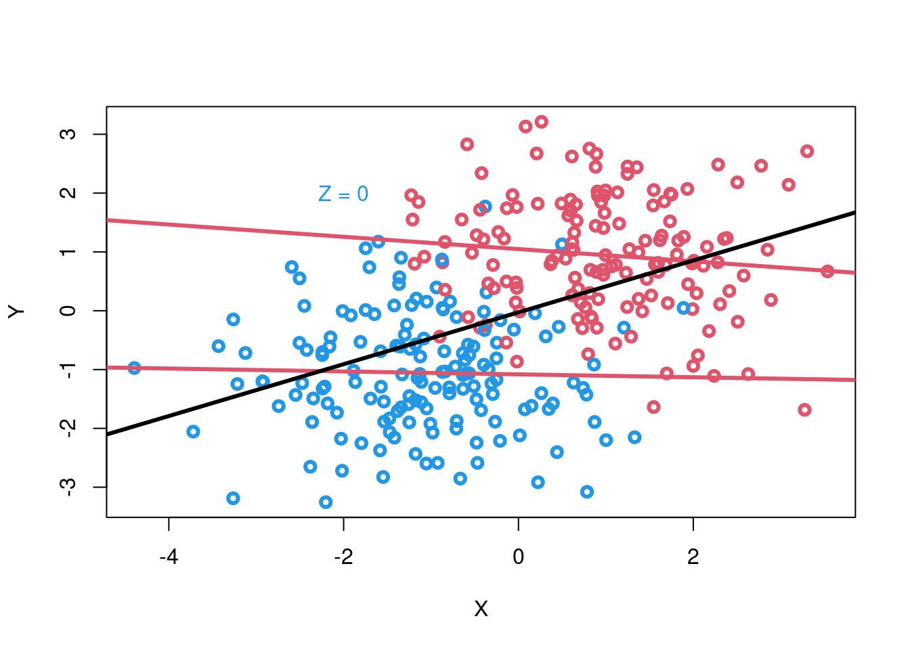
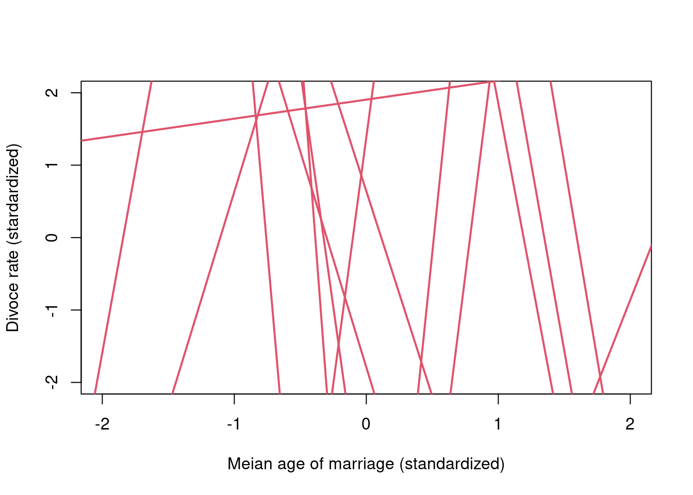
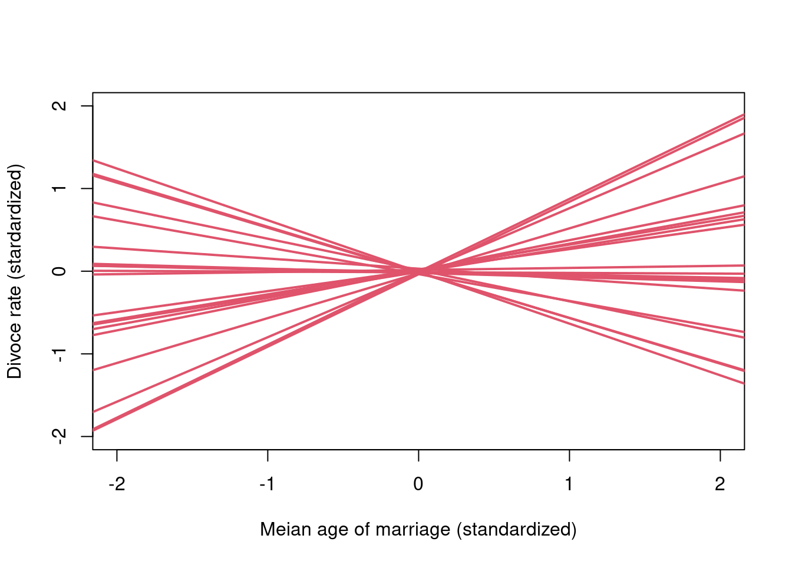

Chapter 3 Lecture 05
3.1 Elemental confounds
The four elemental confounds
3.2 The fork
\(X \leftarrow Z \rightarrow Y\)
library(simcausal)
n <- 1000
## confounding variable
## Fair coin flip
Z <- rbern(n, 0.5)
X <- rbern(n, (1-Z)*0.1 + Z*0.9)
Y <- rbern(n, (1-Z)*0.1 + Z*0.9)When \(Z\) equals 0, \(X\) and \(Y\) has 0.1 probabilty to be 1; When \(Z\) equals 1, \(X\) and \(Y\) has 0.9 probabilty to be 1;
table(X, Y)## Y
## X 0 1
## 0 414 95
## 1 89 402\[Y \not\!\perp\!\!\!\perp X\] Y is not independent on X because there is a common cause.
cor(X[], Y)## [1] 0.6320058When we stratify \(Z\), the diagonals are not bigger as proportion as the off diagonals.
\[Y \not\!\perp\!\!\!\perp X \mid Z\]
cor(X[Z==0], Y[Z==0])## [1] 0.01552259cor(X[Z==1], Y[Z==1])## [1] -0.02201733library(simcausal)
cols = c(4, 2)
N = 300
Z <- rbern(N, prob = 0.5)
X <- rnorm(N, 2*Z-1)
Y <- rnorm(N, 2*Z-1)
plot(X, Y, col= cols[Z+1], lwd = 3)
abline(lm(Y[Z==1]~X[Z==1]), col=2, lwd=3)
abline(lm(Y[Z==0]~X[Z==0]), col=2, lwd=3)
abline(lm(Y~X), lwd=3)
text(x = -2, y=2, labels = "Z = 0", col = 4) We have a continouse variable \(X\) and \(Y\). For all \(X\) and \(Y\), there is a positive correlation.
X and Y are not independent on one another.
3.2.1 Fork example
Why do regions of the US with higher rates of marriage also have higher rates of divorce?
library(rethinking)## Loading required package: rstan## Loading required package: StanHeaders## Loading required package: ggplot2## rstan (Version 2.21.3, GitRev: 2e1f913d3ca3)## For execution on a local, multicore CPU with excess RAM we recommend calling
## options(mc.cores = parallel::detectCores()).
## To avoid recompilation of unchanged Stan programs, we recommend calling
## rstan_options(auto_write = TRUE)## Loading required package: cmdstanr## This is cmdstanr version 0.4.0## - Online documentation and vignettes at mc-stan.org/cmdstanr## - Use set_cmdstan_path() to set the path to CmdStan## - Use install_cmdstan() to install CmdStan## Loading required package: parallel## rethinking (Version 2.21)##
## Attaching package: 'rethinking'## The following object is masked from 'package:rstan':
##
## stan## The following objects are masked from 'package:simcausal':
##
## rbern, sim## The following object is masked from 'package:stats':
##
## rstudentdata("WaffleDivorce")
WaffleDivorce## Location Loc Population MedianAgeMarriage Marriage Marriage.SE
## 1 Alabama AL 4.78 25.3 20.2 1.27
## 2 Alaska AK 0.71 25.2 26.0 2.93
## 3 Arizona AZ 6.33 25.8 20.3 0.98
## 4 Arkansas AR 2.92 24.3 26.4 1.70
## 5 California CA 37.25 26.8 19.1 0.39
## 6 Colorado CO 5.03 25.7 23.5 1.24
## 7 Connecticut CT 3.57 27.6 17.1 1.06
## 8 Delaware DE 0.90 26.6 23.1 2.89
## 9 District of Columbia DC 0.60 29.7 17.7 2.53
## 10 Florida FL 18.80 26.4 17.0 0.58
## 11 Georgia GA 9.69 25.9 22.1 0.81
## 12 Hawaii HI 1.36 26.9 24.9 2.54
## 13 Idaho ID 1.57 23.2 25.8 1.84
## 14 Illinois IL 12.83 27.0 17.9 0.58
## 15 Indiana IN 6.48 25.7 19.8 0.81
## 16 Iowa IA 3.05 25.4 21.5 1.46
## 17 Kansas KS 2.85 25.0 22.1 1.48
## 18 Kentucky KY 4.34 24.8 22.2 1.11
## 19 Louisiana LA 4.53 25.9 20.6 1.19
## 20 Maine ME 1.33 26.4 13.5 1.40
## 21 Maryland MD 5.77 27.3 18.3 1.02
## 22 Massachusetts MA 6.55 28.5 15.8 0.70
## 23 Michigan MI 9.88 26.4 16.5 0.69
## 24 Minnesota MN 5.30 26.3 15.3 0.77
## 25 Mississippi MS 2.97 25.8 19.3 1.54
## 26 Missouri MO 5.99 25.6 18.6 0.81
## 27 Montana MT 0.99 25.7 18.5 2.31
## 28 Nebraska NE 1.83 25.4 19.6 1.44
## 29 New Hampshire NH 1.32 26.8 16.7 1.76
## 30 New Jersey NJ 8.79 27.7 14.8 0.59
## 31 New Mexico NM 2.06 25.8 20.4 1.90
## 32 New York NY 19.38 28.4 16.8 0.47
## 33 North Carolina NC 9.54 25.7 20.4 0.98
## 34 North Dakota ND 0.67 25.3 26.7 2.93
## 35 Ohio OH 11.54 26.3 16.9 0.61
## 36 Oklahoma OK 3.75 24.4 23.8 1.29
## 37 Oregon OR 3.83 26.0 18.9 1.10
## 38 Pennsylvania PA 12.70 27.1 15.5 0.48
## 39 Rhode Island RI 1.05 28.2 15.0 2.11
## 40 South Carolina SC 4.63 26.4 18.1 1.18
## 41 South Dakota SD 0.81 25.6 20.1 2.64
## 42 Tennessee TN 6.35 25.2 19.4 0.85
## 43 Texas TX 25.15 25.2 21.5 0.61
## 44 Utah UT 2.76 23.3 29.6 1.77
## 45 Vermont VT 0.63 26.9 16.4 2.40
## 46 Virginia VA 8.00 26.4 20.5 0.83
## 47 Washington WA 6.72 25.9 21.4 1.00
## 48 West Virginia WV 1.85 25.0 22.2 1.69
## 49 Wisconsin WI 5.69 26.3 17.2 0.79
## 50 Wyoming WY 0.56 24.2 30.7 3.92
## Divorce Divorce.SE WaffleHouses South Slaves1860 Population1860
## 1 12.7 0.79 128 1 435080 964201
## 2 12.5 2.05 0 0 0 0
## 3 10.8 0.74 18 0 0 0
## 4 13.5 1.22 41 1 111115 435450
## 5 8.0 0.24 0 0 0 379994
## 6 11.6 0.94 11 0 0 34277
## 7 6.7 0.77 0 0 0 460147
## 8 8.9 1.39 3 0 1798 112216
## 9 6.3 1.89 0 0 0 75080
## 10 8.5 0.32 133 1 61745 140424
## 11 11.5 0.58 381 1 462198 1057286
## 12 8.3 1.27 0 0 0 0
## 13 7.7 1.05 0 0 0 0
## 14 8.0 0.45 2 0 0 1711951
## 15 11.0 0.63 17 0 0 1350428
## 16 10.2 0.91 0 0 0 674913
## 17 10.6 1.09 6 0 2 107206
## 18 12.6 0.75 64 1 225483 1155684
## 19 11.0 0.89 66 1 331726 708002
## 20 13.0 1.48 0 0 0 628279
## 21 8.8 0.69 11 0 87189 687049
## 22 7.8 0.52 0 0 0 1231066
## 23 9.2 0.53 0 0 0 749113
## 24 7.4 0.60 0 0 0 172023
## 25 11.1 1.01 72 1 436631 791305
## 26 9.5 0.67 39 1 114931 1182012
## 27 9.1 1.71 0 0 0 0
## 28 8.8 0.94 0 0 15 28841
## 29 10.1 1.61 0 0 0 326073
## 30 6.1 0.46 0 0 18 672035
## 31 10.2 1.11 2 0 0 93516
## 32 6.6 0.31 0 0 0 3880735
## 33 9.9 0.48 142 1 331059 992622
## 34 8.0 1.44 0 0 0 0
## 35 9.5 0.45 64 0 0 2339511
## 36 12.8 1.01 16 0 0 0
## 37 10.4 0.80 0 0 0 52465
## 38 7.7 0.43 11 0 0 2906215
## 39 9.4 1.79 0 0 0 174620
## 40 8.1 0.70 144 1 402406 703708
## 41 10.9 2.50 0 0 0 4837
## 42 11.4 0.75 103 1 275719 1109801
## 43 10.0 0.35 99 1 182566 604215
## 44 10.2 0.93 0 0 0 40273
## 45 9.6 1.87 0 0 0 315098
## 46 8.9 0.52 40 1 490865 1219630
## 47 10.0 0.65 0 0 0 11594
## 48 10.9 1.34 4 1 18371 376688
## 49 8.3 0.57 0 0 0 775881
## 50 10.3 1.90 0 0 0 0
## PropSlaves1860
## 1 4.5e-01
## 2 0.0e+00
## 3 0.0e+00
## 4 2.6e-01
## 5 0.0e+00
## 6 0.0e+00
## 7 0.0e+00
## 8 1.6e-02
## 9 0.0e+00
## 10 4.4e-01
## 11 4.4e-01
## 12 0.0e+00
## 13 0.0e+00
## 14 0.0e+00
## 15 0.0e+00
## 16 0.0e+00
## 17 1.9e-05
## 18 0.0e+00
## 19 4.7e-01
## 20 0.0e+00
## 21 1.3e-01
## 22 0.0e+00
## 23 0.0e+00
## 24 0.0e+00
## 25 5.5e-01
## 26 9.7e-02
## 27 0.0e+00
## 28 5.2e-04
## 29 0.0e+00
## 30 2.7e-05
## 31 0.0e+00
## 32 0.0e+00
## 33 3.3e-01
## 34 0.0e+00
## 35 0.0e+00
## 36 0.0e+00
## 37 0.0e+00
## 38 0.0e+00
## 39 0.0e+00
## 40 5.7e-01
## 41 0.0e+00
## 42 2.0e-01
## 43 3.0e-01
## 44 0.0e+00
## 45 0.0e+00
## 46 4.0e-01
## 47 0.0e+00
## 48 4.9e-02
## 49 0.0e+00
## 50 0.0e+00\(M \leftarrow A \rightarrow D\)
3.2.2 What does it mean to stratify by a continouse variable
How does \(A\) influence \(D ?\)
What is \(D=f(A, M) ?\)
In a linear regression:
\[ \begin{aligned} D_{i} & \sim \operatorname{Normal}\left(\mu_{i}, \sigma\right) \\ \mu_{i} &=\alpha+\beta_{M} M_{i}+\beta_{A} A_{i} \end{aligned} \]
Every value of \(A\) produces of different relationship between \(D\) and \(M\).
From the perspective of marriage rate, marriage is just something that makes the intercept conditional on age.
OFten convenient to standardize variales in linear regression.
Standardize (Z-score): substract mean and divide by standard deviation.
Computation works better.
Easy to choose sensible priors.
3.2.3
\[ \begin{aligned} D_{i} & \sim \operatorname{Normal}\left(\mu_{i}, \sigma\right) \\ \mu_{i} &=\alpha+\beta_{M} M_{i}+\beta_{A} A \\ \alpha & \sim \operatorname{Normal}(0,10) \\ \beta_{M} & \sim \operatorname{Normal}(0,10) \\ \beta_{A} & \sim \operatorname{Normal}(0,10) \\ \sigma & \sim \operatorname{Exponential}(1) \end{aligned} \]
n <- 20
a <- rnorm(n, 0, 10)
bM <- rnorm(n, 0, 10)
bA <- rnorm(n, 0, 10)
plot(NULL, xlim=c(-2, 2), ylim=c(-2, 2),
xlab="Meian age of marriage (standardized)",
ylab="Divoce rate (stardardized)")
Aseq <- seq(from=-3, to=3, len=30)
for(i in 1:n){
mu <- a[i] + bA[i]*Aseq
lines(Aseq, mu, lwd=2, col=2)
}
n <- 20
a <- rnorm(n, 0, 0.02)
bM <- rnorm(n, 0,0.5)
bA <- rnorm(n, 0, 0.5)
plot(NULL, xlim=c(-2, 2), ylim=c(-2, 2),
xlab="Meian age of marriage (standardized)",
ylab="Divoce rate (stardardized)")
Aseq <- seq(from=-3, to=3, len=30)
for(i in 1:n){
mu <- a[i] + bA[i]*Aseq
lines(Aseq, mu, lwd=2, col=2)
}
3.2.3.1 Analyze the data
library(robustHD)## Loading required package: perry## Loading required package: robustbase##
## Attaching package: 'robustHD'## The following object is masked from 'package:rethinking':
##
## standardize